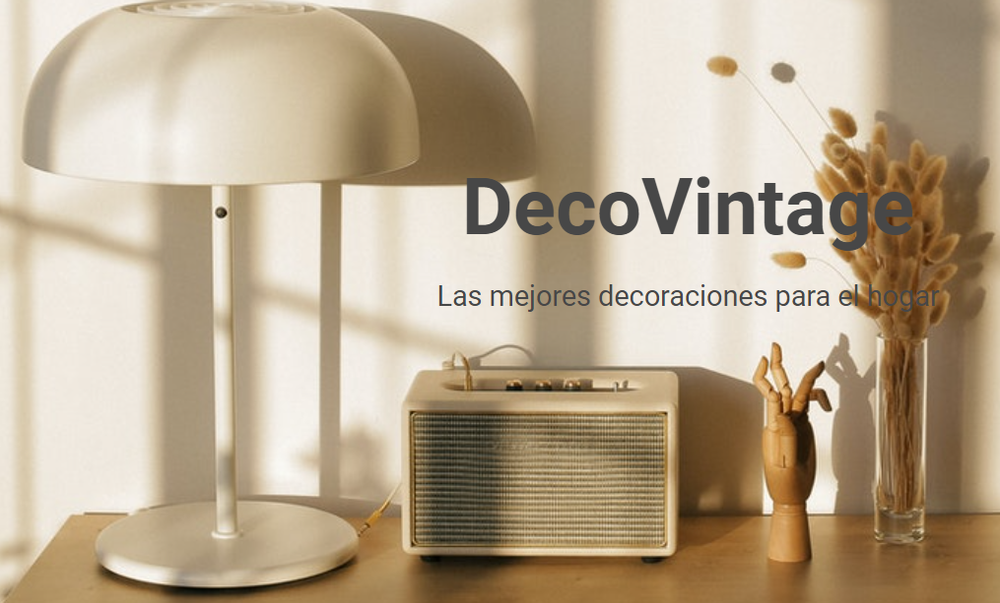
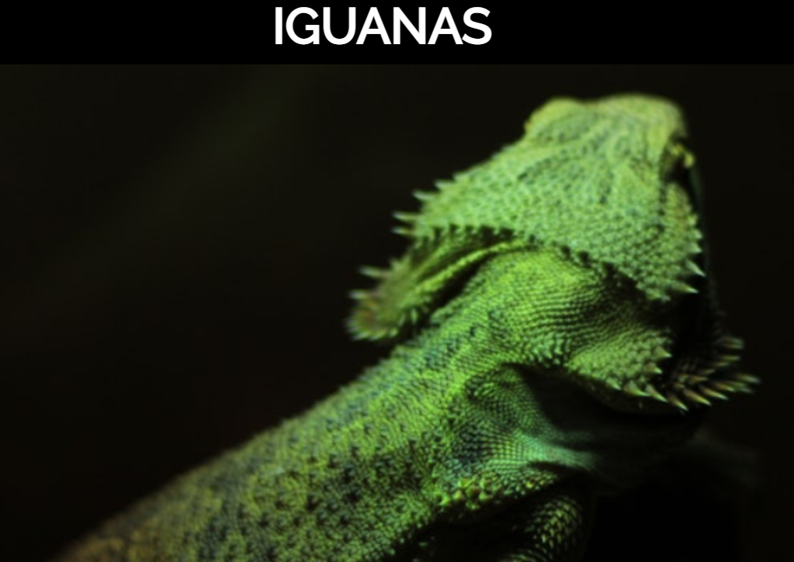

Esta es la primera página que hice en Desafío Latam. Le di un toque elegante para resaltar más la idea de la página. Aquí utilizamos lo aprendido sobre html usando las clases, y css usando el margin y padding, aunque ahora como toque final le agregué responsive.

Iguanas
Esta es la segunda página que hice que habla un poco de las Iguanas. Aquí aprendimos a utilizar el display inline-block para cambiar el elemento, y que sea de bloque y de línea. También le agregue responsive con css.

Cuppon
Esta es la tercera pagína que hice que fue con un framework llamado Booststrap 5, que es una herramienta que facilita mucho a la hora de hacer pagínas. El diseño me gusto mucho. Aquí usamos por primera vez el responsive en una pagína y lo que facilita utilizar las grillas en Boostrap.